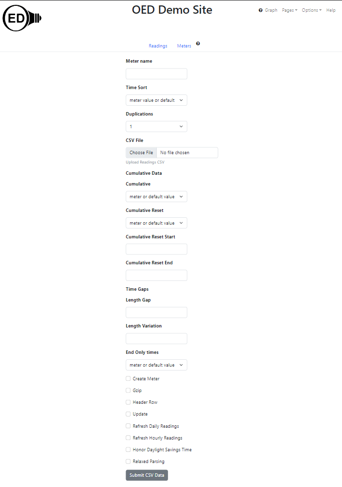

OED Documentation
Reading Import
Version V1.0.0
Documentation overview
Admin documentation
Information
Site Management
Data Acquisition
Site Installation
User documentation
Documentation versions for this page
Overview
This page describes the process of importing readings into OED via a CSV file. See the general CSV import page for an overview and information common to all CSV imports.
Usage
The information needed to upload readings is the same whether done via the web page or direct file upload. The web page looks as follows: 
The items with a dropdown menu generally have the option of "meter value or default" and it is preselected. This choice causes OED to use the value stored on the meter which should be the default value if none was ever supplied. An input box on the web page begins empty and this will cause OED to use the value stored on the meter which should be the default value if none was ever supplied. If a parameter is not supplied in a direct file upload then it defaults to the meter value. The check boxes at the end of the page above do not have meter default values and use the OED default value if not supplied. See the meters creation page for details on the parameters with equivalent meter values along with default values. Any differences are noted with each item. The required and optional information is:
- The user name and password is required in the direct file upload as described on the general CSV import page. It is automatically provided on the web page upload since one is logged in.
- Meter name ("Meter name" input box on web page;
meterNameparameter on direct file upload): This value is required and there is no default. - Time sort ("Time Sort" drop down menu on web page;
TimeSortparameter on direct file upload): If unspecified then it uses the value stored on the meter. Note that when decreasing, OED processes from the last line in the CSV to the first line. This is not normally important to users but note that if an error occurs and processing stops, you will not see messages about earlier lines in the CSV. - # of times a reading is duplicated ("Duplications" drop down menu on web page;
duplicationsparameter on direct file upload): On the web page the drop down menu is set to 1 by default. If unspecified in direct file upload it will use the meter value which defaults to 1. - CSV file ("Choose File" button on web page;
csvFileparameter on direct file upload): This gives the location of the CSV file containing the meter information. On the web page it is via a file picker popup. See below on the file format. - Are the readings cumulative ("Cumulative" drop down menu on web page;
cumulativeparameter on direct file upload): If unspecified then it uses the value stored on the meter. - Do cumulative readings ever reset ("Cumulative Reset" drop down menu on web page;
cumulativeResetparameter on direct file upload): If unspecified then it uses the value stored on the meter. Note specifying cumulative reset without cumulative is considered an error. - Earliest time that cumulative reset occurs ("Cumulative Reset Start" input box on web page;
cumulativeResetStartparameter on direct file upload): If unspecified then it uses the value stored on the meter. - Latest time that cumulative reset occurs ("Cumulative Reset End" input box on web page;
cumulativeResetEndparameter on direct file upload): If unspecified then it uses the value stored on the meter. - How far apart can adjacent readings be ("Length Gap" input box on web page;
lengthGapparameter on direct file upload): If unspecified then it uses the value stored on the meter. - How much can adjacent readings vary in time length ("Length Variation" on web page;
lengthVariationparameter on direct file upload): If unspecified then it uses the value stored on the meter. - Do readings only have an end date/time ("End Only times" drop down on web page;
endOnlyparameter on direct file upload): If unspecified then it uses the value stored on the meter. - Should OED create the meter ("Create Meter" checked if yes on web page;
createMeterparameter on direct file upload): If this value is "yes" then the specified meter will be created if it does not already exist. An automatically created meter will have the default values for meters and this can be modified later. Note that the meter will not be assigned a meter unit so it cannot be used for graphing until that is set. If the meter already exists and this is "yes" then a warning is placed in the OED logs (but not returned as part of the messages). If set "no" but the meter does not exist then OED throws an error that will stop the readings upload so no readings are processed. Note that the meter is created before the readings are processed so it will exist even if the readings are later reject. The default value is "no". - Is CSV file in gzip format ("Gzip" checked if yes on web page;
gzipparameter on direct file upload): Note this is the Gnu zip format and not a standard .zip file format. The default value is yes. Note that gzip files are smaller in size for upload and also have internal validation to protect against corruption so they are preferred. - Does CSV have a header row ("Header Row" checked if yes on web page;
headerRowparameter on direct file upload): Is the first row of the CSV file header information and not an actual reading (see below for format). The default value is no. - Is this an update ("Update" checked if yes on web page;
updateparameter on direct file upload): Any readings in the CSV that duplicate the start and end date/time values of ones already in OED (same start time/date) will be replaced with the provided reading if this is "yes". Any new readings in the CSV will be added. If it is "no" then duplicate readings cause an error and all readings in the CSV are rejected. Note OED rejects all readings to be conservative about changing data. Note that using update removes the previous data and it is lost within OED. Thus, care should be taken in using the update option and it is often safer to limit the items uploaded to avoid issues. The default value is "no". - Should OED refresh its internally stored daily readings after the upload ("Refresh Readings" checked if yes on web page;
refreshReadingsparameter on direct file upload): OED does optimization on uploaded readings so it can quickly respond to user requests for data. While this process does not take long, it can briefly slow the server down. Also, it only makes a difference if a day worth of readings is available. This means it only makes a difference if readings are uploaded for a new day or reading(s) are changed for a previous day. Doing this when the current day is only partly uploaded will not have any effect. Normally, the OED server is set up to automatically do this process a little after midnight on each day so the previous day's readings are optimized and displayed. However, there may be times where you upload data that you want to be available immediately after the CSV upload. Setting refresh readings to "yes" will accomplish this. Note this assumes you are looking at a graphic that deals with complete days (which is the most common) and have not zoomed in to a subset of the data that makes OED show sub-day data. The default value is no. - Should OED refresh its internally stored hourly readings after the upload ("Refresh Hourly Readings" checked if yes on web page;
refreshHourlyReadingsparameter on direct file upload): This is similar to refresh readings except it does the hourly ones. These are slower to refresh but allow the user to see the data on an hourly basis when they zoom into the graph. If this is not done then the hourly data will not show any of the uploaded data. - Should OED detect and honor daylight savings time while processing these readings ("Honor Daylight Savings Time" checked if yes on web page;
honorDstparameter on direct file upload): Should OED honor daylight savings time and appropriately adjust readings when this occurs for this batch of readings. The default value is no. - Should OED not enforce standard checks on parsing date/time values and allow a more flexible interpretation of these values ("Relaxed Parsing" checked if yes on web page;
relaxedParsingparameter on direct file upload): When this is set OED may be able to interpret certain formats of date/time values that it would normally reject. While this can be helpful it can be risky because invalid values may still be interpreted as a valid date/time value. It is better to give the values in the standard format of YYYY-MM-DD HH:MM:SS if at all possible. The default value is no.
Reading CSV file format
If the file has a header row then it should be:
reading, start_timestamp, end_timestamp
Each following line should contain the values for one reading which are:
- reading value: This is the usage between the start date/time and end data/time in the units expected for this meter. Note a reading that is not an integer or real number will cause an error where OED then rejects all readings in the CSV file.
- start_timestamp: (This assumes end only time is no.) This is the start date/time value for this readings. (The name of the column is historical and is not just time). OED accepts any format that our date/time package can accept where most usual formats are recognized. The canonical format is 2021-06-01 00:00:00 (YYYY-MM-DD HH:MM:SS). Note you can put the time before the date, use "/" in place of "-" in the date, and/or not include the seconds (HH:MM). The system should also detect and accept date in a MM-DD-YYYY format. The system tries to detect incorrect formats/dates/times and this causes OED to reject all readings in the CSV file. For example, 2021-06-32 00:00:00 will cause an error since there are not 32 days in June.
- end_timestamp: Similar to start_timestamp but specifies the end date/time value for this reading.
Note the start_timestamp column will not be present if end only is specified. Also, the input format for CSV files is compatible with the export format used. As a result, line graphic data that is exported from OED can be reimported through the CSV ability.
Sample files
For each sample given, there is a link to the CSV file and the curl parameters used to upload that CSV file. The same parameters could be set via the web upload. The curl command one will use will be:
curl <yourOedServer>:3000/api/csv/readings -X POST -F 'createMeter=yes' -F 'meterName=<meterName>' <curlParameters> -F 'email=<loginEmail>' -F 'password=<loginPassword>' -F 'csvfile=@<csvFilename>'
where you replace <yourOedServer> with your OED server URL address (same as when you go to your OED site), <meterName> with the name you want OED to use for this meter, <curlParameters> with the curl parameters listed for each sample file, <loginEmail> with the user email with CSV user login privileges for OED, <loginPassword> with the password for that user and <csvFilename> with the CSV file name listed for the sample file. Note the curl command must be run in the directory containing the CSV file or include the path to that file. As an example for the first sample file, you might have
curl https://myoedserver.come:3000/api/csv/readings -X POST -F 'createMeter=yes' -F 'meterName=regAsc' -F 'headerRow=yes' -F 'gzip=no' -F 'email=csvuser@myorg.com' -F 'password=csvuserpassword' -F 'csvfile=@regAsc.csv'
assuming the shown URL, user email and password and making the meter name be the base of the CSV file name (file name without .csv). Note that meters created by OED are not visible to non-admin users so you will either need to be logged in as an admin or get an admin user to make the meter(s) visible. Also, an admim user needs to refresh the readings for them to be able to be graphed (often happens automatically somewhat after midnight on a site). As an alternative (if it is okay for your server) you can add the parameters -F 'refreshReadings=yes' -F 'refreshHourlyReadings=yes' so OED will do the refresh as part of the upload. Finally, you need to reload the OED web page so your browser is aware of the new meters and data. Please see CSV vs graphic value discussion about expected values in OED graphs.
Below are the lines for a CSV readings import file with a header row where end only is no and the data is not cumulative. It will import three readings with values of 24, 48 and 72 for 1-3 June 2021. Note that the end date/time is at midnight of the next day. (This regAsc.csv was loaded using the curl parameters of -F 'headerRow=yes' -F 'gzip=no'.)
reading,start_timestamp,end_timestamp
24,2021-06-01 00:00:00,2021-06-02 00:00:00
48,2021-06-02 00:00:00,2021-06-03 00:00:00
72,2021-06-03 00:00:00,2021-06-04 00:00:00
Below are the lines for a CSV readings import file with a header row where end only is yes and the data is not cumulative. The readings are the same as the last one but OED will drop the first ever reading for end only data (assuming the meter does not already exist) with an appropriate error message returned by OED. (This regAscEndonly.csv was loaded using the curl parameters of -F 'endOnly=yes' -F 'headerRow=yes' -F 'gzip=no'.)
reading,end_timestamp
24,2021-06-02 00:00:00
48,2021-06-03 00:00:00
72,2021-06-04 00:00:00
Below are the lines for a CSV readings import file with a header row where end only is no, the data is not cumulative and update is yes. It is assumed that the first example (two above) was run first so the reading values of 24, 48 & 72 already exist in OED. The second row of the CSV (first with a reading) will create a new reading for 31 May 2021 with a reading value of 0. This is the assumed previous reading in the following cumulative examples and has the date for the previous reading with end only times in the following examples. The third row of the CSV will modify (update) the current reading for 1 June 2021 to change the value from 24 to 36. The fourth row of the CSV will update the reading for 2 June 2021 but since the reading provided is the same as the one already in OED you cannot see that this was done. Note you get a warning returned by OED since the first reading is before the last upload for this meter but this does not change the outcome. (This regAscUpdate.csv was loaded using the curl parameters of -F 'update=yes' -F 'headerRow=yes' -F 'gzip=no' where you reuse the same meter name that was used in the first sample [likely regAsc].)
reading,start_timestamp,end_timestamp
0,2021-05-31 00:00:00,2021-06-01 00:00:00
36,2021-06-01 00:00:00,2021-06-02 00:00:00
48,2021-06-02 00:00:00,2021-06-03 00:00:00
Below are the lines for a CSV readings import file without a header row where end only is no and the data is cumulative. The readings are the same as regAscEndonly since the first ever reading must be dropped and OED returns an error message about that. The second row is calculated by OED to be 72 - 24 = 48 and the third as 144 - 72 = 72. (This cumAsc.csv was loaded using the curl parameters of -F 'cumulative=yes' -F 'gzip=no'.)
24,2021-06-01 00:00:00,2021-06-02 00:00:00
72,2021-06-02 00:00:00,2021-06-03 00:00:00
144,2021-06-03 00:00:00,2021-06-04 00:00:00
Below are the lines for a CSV readings import file with a header row where end only is no and the data is cumulative with reset as yes. The readings are the same as the last one with one more reading at the end. This reading will have an OED value of 96 since 96 is less than 144 so a reset is assumed to have happened. The other readings all have the row reading greater than or equal to the previous row reading so no reset occurred. Note the request could set the reset time start and end to be close to midnight (23:55 & 00:05 if must be within 5 minutes of midnight) if you want to avoid OED assuming a reset at another time is okay. (This cumAscReset.csv was loaded using the curl parameters of -F 'cumulative=yes' -F 'cumulativeReset=yes' -F 'headerRow=yes' -F 'gzip=no'.)
reading,start_timestamp,end_timestamp
24,2021-06-01 00:00:00,2021-06-02 00:00:00
72,2021-06-02 00:00:00,2021-06-03 00:00:00
144,2021-06-03 00:00:00,2021-06-04 00:00:00
96,2021-06-04 00:00:00,2021-06-05 00:00:00
Below are the lines for a CSV readings import file with a header row where end only is no, the data is cumulative and time sort is "decreasing". The readings are the same as the two above (cumAsc). The CSV file is the same except all rows past the first header row are in reverse order so time decreases as you go down the rows. An example without cumulative is not shown but it would be similar but have reading values of 72, 48 & 24 for rows 2-4 (but here the first reading of 24 would not be dropped). (This cumDsc.csv was loaded using the curl parameters of -F 'cumulative=yes' -F 'timeSort=decreasing' -F 'headerRow=yes' -F 'gzip=no'.)
reading,start_timestamp,end_timestamp
144,2021-06-03 00:00:00,2021-06-04 00:00:00
72,2021-06-02 00:00:00,2021-06-03 00:00:00
24,2021-06-01 00:00:00,2021-06-02 00:00:00
Below are the lines for a CSV readings import file with a header row where end only is yes, the data is cumulative, time sort is "decreasing". The readings are the same as the one above. This again shows that you can use many possibilities in combination where here it is both cumulative and end only. (This cumDscEndonly.csv was loaded using the curl parameters of -F 'endOnly=yes' -F 'cumulative=yes' -F 'timeSort=decreasing' -F 'headerRow=yes' -F 'gzip=no'.)
reading,end_timestamp
144,2021-06-04 00:00:00
72,2021-06-03 00:00:00
24,2021-06-02 00:00:00
Below are the lines for a CSV readings import file with a header row where end only is no, the data is cumulative and duplication is 3. The readings are the same as the one above where each line is duplicated three times. (This cumAscDuplication.csv was loaded using the curl parameters of -F 'cumulative=yes' -F 'duplications=3' -F 'headerRow=yes' -F 'gzip=no'.)
reading,start_timestamp,end_timestamp
24,2021-06-01 00:00:00,2021-06-02 00:00:00
24,2021-06-01 00:00:00,2021-06-02 00:00:00
24,2021-06-01 00:00:00,2021-06-02 00:00:00
72,2021-06-02 00:00:00,2021-06-03 00:00:00
72,2021-06-02 00:00:00,2021-06-03 00:00:00
72,2021-06-02 00:00:00,2021-06-03 00:00:00
144,2021-06-03 00:00:00,2021-06-04 00:00:00
144,2021-06-03 00:00:00,2021-06-04 00:00:00
144,2021-06-03 00:00:00,2021-06-04 00:00:00
Return messages
Most messages end with some standard information that can help you (and if needed the OED project) understand what happened. If there are issues, the beginning of the message will have:
<h1>FAILURE</h1><h2>It looks like the insert of the readings had issues with some or all of the readings where the processing of the readings returned these warning(s)/error(s):</h2>
The later part of the message will normally include what OED thought was the previous and current reading along with the parameter values it is using for processing. This is an example:
For reading #1 on meter pipe3 in pipeline: previous reading has value 0 start time 1970-01-01T00:00:00+00:00 end time 1970-01-01T00:00:00+00:00 and current reading has value 24 start time 2021-06-01T00:00:00+00:00 end time 2021-06-02T00:00:00+00:00 with timeSort increasing; duplications 1; cumulative true; cumulativeReset false; cumulativeResetStart 00:00:00; cumulativeResetEnd 23:59:59.999999; lengthGap 0; lengthVariation 0; onlyEndTime false
In this case, the previous reading was the default one set by OED to indicate that no meter reading has yet been saved. This can be seen from the date of 1970-01-01. Note all parameters are shown even if they are not used in this circumstance. For example, the cumulateResetStart/End is given even though cumulativeReset is false.
Additional information included in all messages will be a list of dropped readings at the end of the message. Note these are not given if all readings are dropped (indicated in message). An example where the first reading is dropped is:
<h2>Readings Dropped and should have previous messages</h2><ol><li>Dropped Reading #1 for meter pipe3</li></ol>
What follows are the common messages returned from a reading upload along with their meaning. The standard information in messages just described is not included in what is given.
-
For meter pipe3: Error parsing Reading #1. Reading value gives 24 with error message:
The first ever reading must be dropped when dealing with cumulative data.
This is expected when the first ever cumulative reading is added to a meter. The message will also indicate that Reading #1 was dropped. See first ever reading below. -
For meter pipe6: Error parsing Reading #4. Reading value of 96 gives -48 with error message:
A negative meterReading has been detected but either cumulativeReset is not enabled, or the start time and end time of this reading is out of the reset range. Reject all readings.
With cumulative data, the current reading value is calculated as the current reading value minus the previous reading value. In this case the current reading value is 96 and the previous reading value is 144 so the calculated reading value is 96 - 144 = -48. In the message the previous reading value is given as 72 because this was the calculated reading value but OED uses the original, raw reading value (144) to do the actual calculation. Having the raw cumulative value decrease is not allowed unless cumulativeReset is yes and happens within the allowed time range. You can tell which of the possible reasons for the message (cumulativeReset is no or not within the allowed time range) by looking at the values for the current and previous reading. To make sure that incorrect values are not added to OED, no reading from this CSV are added to OED and this is indicated in the message. -
For meter pipe50: Error parsing Reading #3. Detected a negative value while handling cumulative readings so all reading are rejected.
Unlike the case above, this case is where the actual meter readings (not the net value calculated by OED) is negative for cumulative readings. Since OED subtracts readings, a negative value will make a reading larger and this is not normal. As a result, OED is cautious and assumes an error and rejects all readings as a result. Note that OED will let you know if the previous reading was from the meter (this is used in the first reading in the CSV) by giving the message asThe last meter reading (logical previous reading) was negative with value -1 with cumulative readings the previous reading cannot be negative so all reading are rejected. -
For meter pipe13: Warning parsing Reading #2. Reading value gives 48 with warning message:
The previous reading has a different time length than the current reading and exceeds the tolerance of 0 seconds. Note this is treated only as a warning since this may be expected for certain meters.
The time length of a reading is the end time minus the start time. If this exceeds the value for the lengthVariation parameter than a warning is generated. In this case the lengths varied and the allowed time length variation was zero so the message was given. This is only a warning for several reasons. First, some meters vary in when values are acquired so some variation in the reading time length is expected. Second, changes in variation still allow OED to determine all needed values. Note that OED detects when the previous reading is the special one where the meter has never recorded a reading and will not report that case as a warning. -
For meter pipe16: Warning parsing Reading #2. Reading value gives 48 with warning message:
There is a gap in time between this reading and the previous reading that exceeds the allowed amount of 0 seconds.
The reading gap is the difference between the start time of the current reading and the end time of the previous reading. In this case they differ and the lengthGap parameter was zero so that generated the message. This is only a warning since OED can still correctly determine the reading value. Note that OED detects when the previous reading is the special one where the meter has never recorded a reading and will not report that case as a warning. -
For meter pipe48: Error parsing Reading #2. Reading value gives 48 with error message:
The end of the previous reading is too far from the start of the next readings in cumulative data so drop this reading.
Unlike non-cumulative data above, in the case of cumulative data where there is a gap between readings that exceeds lengthGap it is an error. This is because OED uses the difference between the current and previous reading's value to get the net reading for use in OED. Where there is a gap it may indicate missing time so this calculation is not trusted. As a result, OED drops this reading. -
For meter pipe38: Warning parsing Reading #1. Reading value gives 0 with warning message:
The current reading startTime is not after the previous reading's end time. Note this is treated only as a warning since readings may be sent out of order.
There is a gap in time between this reading and the previous reading that exceeds the allowed amount of 0 seconds.
OED expects readings to come in chronologically increasing time. If the start time of the current reading is before the previous readings end time then a warning is generated. Note there is often a second warning about a gap between the readings since that is also present (see above about gaps between readings). This can happen if two different reading uploads are not done in order such as loading readings from past so it is only a warning. -
For meter pipe49: Error parsing Reading #2. Reading value gives 48 with error message:
The reading start time is before the previous end time and the data is cumulative so OED cannot use this reading.
Unlike non-cumulative data above, in the case of cumulative data where the current reading is not after the previous reading it is an error. This is because OED uses the difference between the current and previous reading's value to get the net reading for use in OED. When the readings are out of time order this may indicate the two readings are not consecutive so this calculation is not trusted. As a result, OED drops this reading. -
For meter pipe43: Error parsing Reading #2 The start and/or end time provided did not parse into a valid date/time so all reading are rejected.
OED checks that the dates/times provided for the current reading are in a valid format. If not, this error is generated. To make sure that incorrect values are not added to OED, no reading from this CSV are added to OED and this is indicated in the message. -
For meter pipe47: Error parsing Reading #4 The reading value provided of 9a is not considered a number so all reading are rejected.
Similarly to checking the date/time, OED makes sure the reading value is a valid number. If not, this error is generated where the value was "9a" here. To make sure that incorrect values are not added to OED, no reading from this CSV are added to OED and this is indicated in the message. -
For meter pipe51: Error parsing Reading #2. Reading value gives 48 with error message:
The reading end time is not after the start time.
A reading must span some amount of time so it is invalid to have an end time that is not after the start time. This is an error and the current reading is dropped. If you have endOnly readings then the start time of the current reading comes from the end time of the previous reading and OED will inform you of this as part of the message. This does not change how OED deals with this error. -
For meter pipe52: Error parsing Reading #2. Reading value gives 48 with error message:
The reading end time is not after the start time so we must drop the reading. The start time came from the previous readings end time.
This is for endOnly as yes. The current reading's start time comes from the previous reading's end time. As above, this means that the current reading's end time must be after the previous reading's end time and the reading is dropped. Note that you may get warnings about reading length variation and/or gaps for the next two points due to this one being off. This includes the fact that the next reading will use the this end reading so it may span the wrong amount of time. -
<h1>WARNING - The total number of messages was stopped due to size.' + ' The log file has all the messages.</h1> The current message <h1>Message lost starting now.</h1>
When processing a CSV file, it is possible that there will be a large number of messages (warnings and/or errors). For example, forgetting to make cumulative yes can cause many lines to be rejected for negative values. To avoid returning a message of excessive size, OED limits the total message to about 75,000 characters which is normally 75 or more unique messages. This should give sufficient information about what is going on but any remaining messages that are truncated will be seen once the earlier issues are resolved but note they are always present in the OED log file on your OED server. You will see something similar to the message above except "The current message" will be replaced by the message OED is currently issuing for that row of the CSV file. - You can get a variety of error messages if the gzip is improperly set. These include "TypeError", "invalid message format" and others. This is because OED is incorrectly reading the CSV file and receives garbled information.
Details
This provides further information on loading CSV readings into OED. Note many apply to the code for loading readings into OED so apply even if it is done outside this CSV mechanism.
See readings after CSV uploaded
One needs to reload the web browser pages as described here. One also will not see values if a refresh was needed and not performed.
First reading ever seen by a meter
OED uses the previous value to validate reading length and the gap to the previous reading. It also uses the previous reading to determine the current reading's value for cumulative readings. There is a startup issue when a meter is first created concerning what the previous reading will be. As described on the CSV meter import page, OED sets the previous reading to have start/end dates/times of 1970-01-01 00:00:00 and a reading of zero. This should make it the case that this is well before any actual meter reading and OED uses this special value to detect when a meter has never had a reading added. Due to this, if the reading is either cumulative and/or end only date/time then it must be discarded. This is because there is no real previous point to use to get the needed values. OED will report that the CSV upload failed and tell you it dropped the first reading as needed. Note that OED will be fine after the first ever reading since it will use the first ever reading as the previous reading when it does the second reading.
CSV file that is not immediately after the last previous reading
OED uses the previous reading to do calculations and validation of a reading. If you upload a CSV where the first reading is not the next reading for this meter you will see issues for similar reasons to the first ever reading described above. This includes OED warning about a gap, possibly a warning about the reading being earlier in time than the previous reading (if that is yes), and possible rejection of the reading if this is cumulative data and/or end only data. As described above, the next reading in the CSV will be handled without these issues. Note you can get these issues if the previous CSV upload was rejected (all readings) because OED does not update the previous reading in this case (to avoid mistakes). Thus, the previous reading stays as what it was before the upload of this CSV. This can be fixed by addressing the issue(s) with the CSV and uploading again before the next CSV upload of later data. As noted on the general CSV import page, OED returns messages to let you know that an issue occurred and direct file upload will return an error code.
Reading value in CSV vs what is seen in OED
OED displays data per unit time in a line graph. In the CSV example files above, each reading spans one day or 24 hours. Thus, if this was electricity readings in KW, OED would, by default, graph KW/hour and each value in the CSV will show up as 1/24 of the value provided when graphed by OED. In the sample values, 24, 48 and 72 (KW for 24 hours) will be shown on a line graphic as 1, 2 and 3 (KWh). OED does a sophisticated average where it proportionally includes part of a reading's value if it crosses the boundary of the time range of the point being graphed. In general you do not need to worry about this but it is mentioned so people will not think that OED should show the CSV file value directly.
Cumulative data and resets
For OED to get the usage during any time period for cumulative data, it must subtract the previous reading from the current one. When a reset occurs, OED assumes the previous reading was zero which means it uses the current reading as the usage for the period represented by this reading. Since there is no alternative, OED assumes the current reading began the period with a reading of zero. If the reset occurs in the middle of a reading, OED will not include any usage before the reset happened it this period. Meters should not do resets in the middle of a reading but it would cause inaccuracies for that reading if it did.
Row numbers in returned messages
OED tries to return the row (line) number of the CSV when it reports any messages. First, OED strips off the header row so that is not counted in the row number. This means the second row in a CSV file (assuming time sort is ascending) will be shown as row #1. Note that when time sort is descending, OED still reports the row numbers in the same way (even though it processes the data from the last to first row).
Using dropped readings as the previous reading
If all readings are dropped then the previous reading associated with the meter is not updated and no changes are stored for any readings. In all other cases, the previous reading associated with the meter is updated with the last reading in the CSV file. Note that OED should use the previous row in the CSV as the previous readings even if it is dropped. The reason is that readings generally come in time order so removing one will cause the next reading to generate an error. Thus, the bad reading is used for processing a next reading but is not stored as a reading in OED.